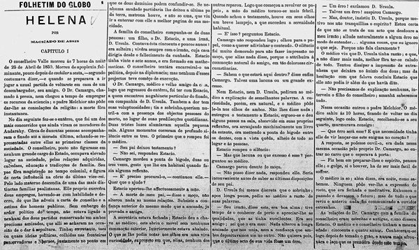

Quem não gosta de um bom cafezinho com leitura
Coffee houses, lugares amados pelos ingleses, estão incorporando uma adição em seus estabelecimentos. A invenção de Richard Steele e Joseph Addison, os folhetins, foi muito bem recebida pelos amantes de café, que antes só tinham o tema do café para discutir.

Os folhetins, que passaram a fazer parte das coffee houses, abordavam tópicos que incluíam política e escândalos políticos, fofocas diárias, moda, eventos atuais e debates sobre filosofia e ciências naturais. Por causa disso, grupos políticos começaram a utilizar os cafés como locais de encontro com frequência."

Crescimento de vendas
Charles Dickens, que decidiu lançar sua história, Oliver Twist como uma série de emocionantes folhetins. Criou um frenesi literario e impussionou as vendas nas livrarias e bancas de jornais registrando um aumento extraordinário na procura por folhetins. As pessoas agora se tornaram participantes ativas, discutindo avidamente as reviravoltas na trama de "Oliver Twist" em cada esquina.

Oliver Twist é uma história que conta a vida de um menino cuja mãe morreu no parto e durante muito tempo ele nada soube sobre ela nem sua família. Órfão e pobre, Oliver sofre maus-tratos de muitas pessoas que cruzam seu caminho e acaba sob os cuidados de um criminoso, que pretende levá-lo para o mal caminho.

Extra, extra! o rei chegou no brasil
A chegada da comitiva Real gerou agitação entre os presentes, enquanto as prensas exalavam o característico cheiro de tinta, despertando a curiosidade da multidão. O grandioso Rei de Portugal, Dom Pedro XXII, liderava a apresentação das máquinas que, segundo ele, 'dariam vida às palavras'.

Os mestres impressores europeus deram início às demonstrações, revelando o funcionamento meticuloso das prensas, capazes de eternizar pensamentos e narrativas. A multidão, extasiada, observava enquanto as primeiras páginas eram produzidas ali, diante de seus olhos.
A promessa da imprensa era de informações acessíveis, disseminação de conhecimento e a democratização das ideias, algo enaltecido no discurso inaugural pelo rei, que declarou aquele momento como histórico e de grande relevância para o progresso das terras brasileiras. Assim, as páginas impressas foram distribuídas entre o povo, uma nação ávida por informação e sabedoria.
REVISTA ILLUSTRADA: SUAS NOTíCIAS COM IMAGENS
No Brasil Imperial, uma nova era de informações e entretenimento desponta, com as Revistas Ilustradas, o Folhetim Ilustrado, a Gazeta Gráfica e a Crônica Pictórica! Essas publicações, adornadas por capas chamativas e ilustrações caprichadas, oferecem um festim para mentes ávidas, repletas de histórias vibrantes que não apenas entretêm, mas também influenciam a imaginação e os debates de uma nação em constante mutação. Preparem-se, leitores, para uma explosão de cores e narrativas que saltam das páginas direto para o cerne do Império!

Os enredos ousados e os personagens que transitam entre o exótico e o cotidiano dão vida às histórias presentes nessas páginas pulsantes, transportando os leitores para mundos encantados e situações inusitadas. A arte da caricatura ocupa um lugar de destaque, com artistas talentosos esbanjando em suas ilustrações afiadas, satirizando a sociedade e seus costumes, desde as extravagâncias da corte até os hábitos peculiares das ruas. O editor-chefe do "Folhetim Ilustrado", Doutor Hipólito Penachinho, compartilha a visão inovadora por trás dessas revistas: "Buscamos a diversão aliada à informação. As ilustrações são tão essenciais quanto as palavras, juntas formando uma dança exuberante de cultura e entretenimento para nossos leitores."

A lembrançaa de uma Era
A novela retrata Helena como uma figura caridosa e benevolente em relação aos escravos, mostrando-a como alguém que trata seus cativos com certa bondade, mas sem questionar o sistema escravocrata em si. Isso reforça a visão romantizada dos escravistas sobre a escravidão, ignorando as crueldades e desigualdades inerentes a esse sistem.
Helena, uma personagem fictícia de uma novela popular do Brasil Imperial, está fazendo enorme sucesso nos círculos mais conservadores da sociedade. A trama se passa em uma fazenda do século XIX, onde Helena é retratada como uma jovem herdeira de uma família de fazendeiros influentes, durante um período em que a abolição da escravidão começa a ser discutida no país.

Ao mesmo tempo, a personagem de Helena serve como uma ferramenta para reforçar ideais conservadores e resistir às mudanças sociais que estão começando a surgir na sociedade da época, especialmente em relação à abolição. O sucesso da personagem Helena reside na maneira como ela representa um período de poder e estabilidade para os escravistas, oferecendo uma narrativa que lhes permite reviver os dias de prestígio que a abolição da escravidão ameaça apagar da história.
Sua popularidade ressoa entre os escravistas mais tradicionais, que veem na novela uma representação nostálgica de uma época em que a escravidão era o pilar da economia. Helena simboliza a riqueza, o poder e a estabilidade que esses setores da sociedade desfrutavam naquela época.